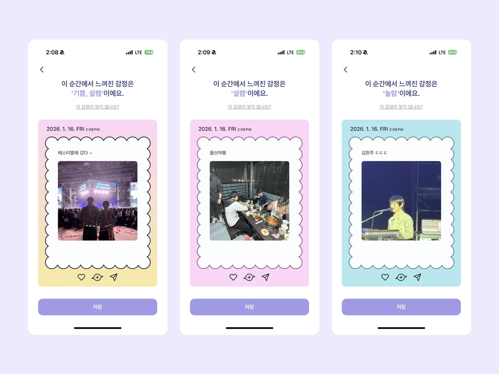
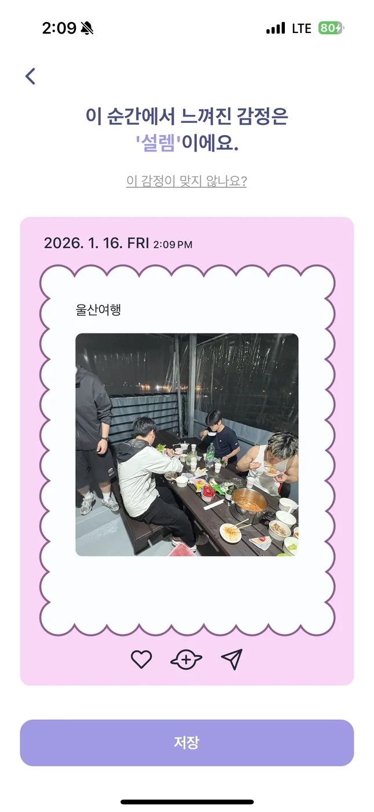
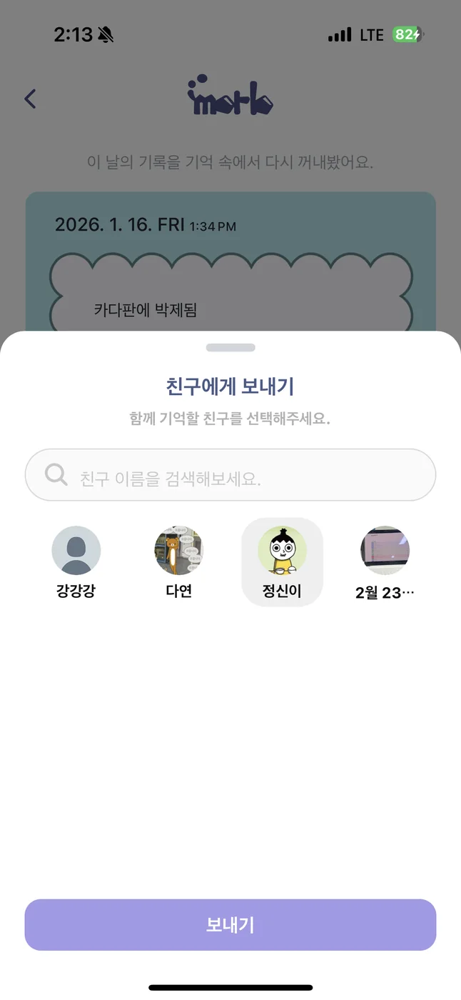
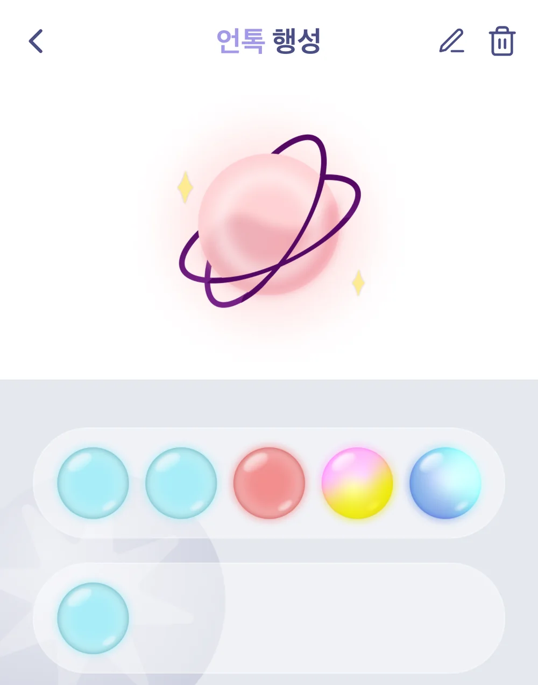
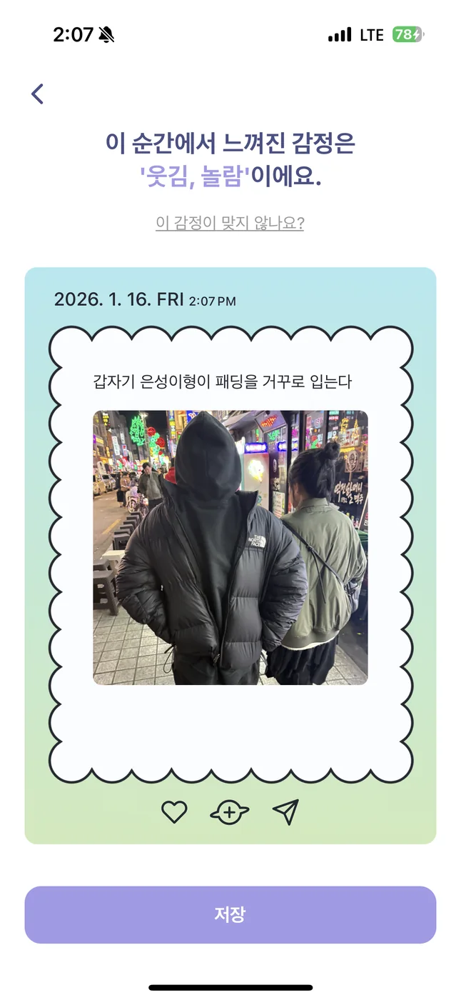

2025.2 · UNTOC CAMP
MORB
기억을 감정의 색으로 보관하고 친구와 나누는 AI 기반 모바일 앱입니다.
- 역할
- PM · Frontend · Backend
- AI
- Google Gemini API
- 형태
- Mobile Application

01
프로젝트 설명
신입생 때부터 가까이 지낸 동아리 친구들과 쌓은 추억이 시간이 지나며 흐려지는 경험에서 시작했습니다. 2026년 1월, 추억을 쉽고 보기 좋게 기록하기 위해 영화 인사이드 아웃의 기억 구슬에서 아이디어를 얻어 앱을 완성했습니다.
사용자가 텍스트와 사진을 남기면 Gemini API가 감정을 분석합니다. 분석 결과에 맞는 색의 메모지와 기억 구슬이 생성되며, 기억은 행성별로 분류됩니다. 캘린더에서 날짜별 기억을 돌아보고, 완성된 기억 구슬을 친구에게 공유할 수도 있습니다.
02
나의 역할
- PM핵심 기능과 콘셉트를 기획하고 팀원의 의견을 조율했습니다.
- Backend기억 구슬의 저장·수정·삭제·전송 라우터를 구현했습니다.
- Frontend기억 작성과 저장, 수정 및 삭제 화면을 구현했습니다.
03
결과
2025년 2학기 UNTOC CAMP 1위기획부터 프론트엔드와 백엔드 구현까지 전 과정에 참여했습니다.
04
주요 화면
감정 기록 · 캘린더 · 행성 · 공유


